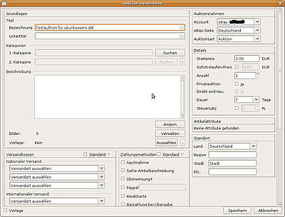
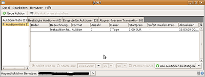
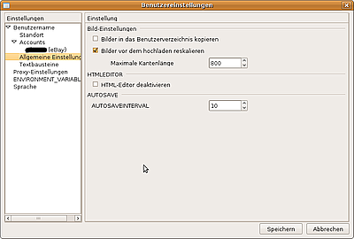

jaolt
Archivierte Anleitung
Dieser Artikel wurde archiviert, da er - oder Teile daraus - nur noch unter einer älteren Ubuntu-Version nutzbar ist. Diese Anleitung wird vom Wiki-Team weder auf Richtigkeit überprüft noch anderweitig gepflegt. Zusätzlich wurde der Artikel für weitere Änderungen gesperrt.
Zum Verständnis dieses Artikels sind folgende Seiten hilfreich:
jAOLT  (Java Auction Organsiation and Listing Tool) ist ein Auktions-Einstellungswerkzeug, mit dem es ermöglicht wird, ohne bestehende Internetverbindung Auktionen zu erstellen und sie später gebündelt hochzuladen. Zusätzlich kann man den aktuellen Status von momentan laufenden Auktionen abrufen (Höchstgebot, Anzahl der Besucher usw.).
(Java Auction Organsiation and Listing Tool) ist ein Auktions-Einstellungswerkzeug, mit dem es ermöglicht wird, ohne bestehende Internetverbindung Auktionen zu erstellen und sie später gebündelt hochzuladen. Zusätzlich kann man den aktuellen Status von momentan laufenden Auktionen abrufen (Höchstgebot, Anzahl der Besucher usw.).
Momentan (Stand: 16.10.2009) werden die Auktionsplattformen eBay  , AuVito und Hood unterstützt.
, AuVito und Hood unterstützt.
Merkmale¶
Auktionen erstellen
Auktionen vorzeitig beenden
automatisch externe Bilderspeicher (bei Vorhandensein eines FTP-Zuganges) verwenden, um eventuell anfallende Gebühren zu sparen
laufende und beendete Auktionen herunterladen
Auktionen verfolgen
kostenlose Startzeitplanung innerhalb von jAOLT
beliebig viele Benutzerkonten mit jeweils beliebig vielen Auktionsplattformkonten
Voraussetzungen¶
Das Programm erfordert eine Java-Laufzeitumgebung (JRE), welche mindestens der Version 1.5 (Java 5) oder neuer entsprechen sollte.
Installation¶
Adresszeile zum Hinzufügen des PPAs:
ppa:handschuh/ppa
Hinweis!
Zusätzliche Fremdquellen können das System gefährden.
Ein PPA unterstützt nicht zwangsläufig alle Ubuntu-Versionen. Weitere Informationen sind der  PPA-Beschreibung des Eigentümers/Teams handschuh zu entnehmen.
PPA-Beschreibung des Eigentümers/Teams handschuh zu entnehmen.
Damit Pakete aus dem PPA genutzt werden können, müssen die Paketquellen neu eingelesen werden.
Nach dem Aktualisieren der Paketquellen muss dann das folgende Paket installiert [2] werden:
jaolt (ppa)
 mit apturl
mit apturl
Paketliste zum Kopieren:
sudo apt-get install jaolt
sudo aptitude install jaolt
Nach der Installation findet man jaolt im GNOME-Menü unter
"Anwendungen -> Internet -> jAOLT"
und im KDE-Menü unter
"Programme -> Internet -> jAOLT"
Manuelle Installation¶
Es besteht die Möglichkeit, mit Hilfe von Ant (und Ant-optionals) eine Binärversion aus dem zur Verfügung stehenden Quellcode zu erstellen. Dazu lädt man sich zuerst mittels des Programms Subversion den Jaolt-Quellcode aus dem Projektarchiv. Falls die Meldung
Expected to find it in /usr/lib/jvm/java-6-openjdk/lib/tools.jarExpected to find it in /usr/lib/jvm/java-6-openjdk/lib/tools.jar
erhaltet muss noch das "Java Development Kit" (JDK) installiert werden:
sudo apt-get install sun-java6-jdk
Danach geht es weiter mit:
svn checkout http://jaolt.googlecode.com/svn/trunk jaolt_svn
Anschließend wechselt man in das neue Verzeichnis jaolt_svn und kompiliert die Quellen mittels
ant
Nach einem erfolgreichen Build-Vorgang ist als abschließender Schritt das Debian-Paket zu erstellen, indem man im Verzeichnis jaolt_svn/packages/deb erneut
ant
ausführt. Das Paket befindet sich dann im jaolt_svn/packages/deb/dist-Ordner und folgt der Namensgebung jaolt_$version-$revision_all.deb.
Automatisch erstellte Pakete¶
Adresszeile zum Hinzufügen des PPAs:
ppa:handschuh/jaolt-nightlies
Hinweis!
Zusätzliche Fremdquellen können das System gefährden.
Ein PPA unterstützt nicht zwangsläufig alle Ubuntu-Versionen. Weitere Informationen sind der PPA-Beschreibung des Eigentümers/Teams handschuh zu entnehmen.
Damit Pakete aus dem PPA genutzt werden können, müssen die Paketquellen neu eingelesen werden.
Nach dem Aktualisieren der Paketquellen muss dann das folgende Paket installiert [2] werden:
jaolt (jaolt-nightlies)
mit apturl
Paketliste zum Kopieren:
sudo apt-get install jaolt
sudo aptitude install jaolt
Konfiguration/ Benutzung¶
 Beim ersten Start muss man die gewünschte Sprache auswählen. Anschließend wird abgefragt, ob ein Demo-Konto genutzt, ein existierendes Benutzerkonto geöffnet oder ein neuer Benutzer angelegt werden soll. Es lassen sich im Programm jederzeit weitere Benutzer hinzufügen.
eBay Token¶
Nutzt man ein bei Ebay als Verkäufer registriertes Benutzerkonto, so muss zuerst ein "Token", d.h. die Berechtigung, dass das Programm jAOLT auf das eigene Benutzerkonto zugreifen darf, aus Ebay importiert werden. Dazu legt man einen neuen Benutzer in jAOLT an. Im zweiten Schritt wird man nach der Plattform, in diesem Fall Ebay, und dem Benutzernamen gefragt. Ein Link unter "Sicherheitstoken" bietet eine Anleitung, wie man sich einen Token selber erstellen kann.
Neue Auktion erstellen¶
Hinweis:
Wenn zum ersten Mal eine neue Auktion bearbeitet wird, lädt jAOLT statistische Daten herunter. Dies gelingt nur, wenn zuvor der Sicherheitstoken oder das Passwort eingetragen wurde, damit das Programm mit der Schnittstelle der Auktionsplattform kommunizieren kann.
Eine neue Auktion wird erstellt, indem auf den Button "Neue Auktion" geklickt wird. Das sich öffnende Fenster erlaubt das Erstellen einer Auktion offline mit Bildern, Design, Startzeitplanung und allen benötigten Angaben zu Versand und Kategorien. Das Erstellen der Auktion ist jederzeit speicherbar und zu einem späteren Zeitpunkt wieder fortführbar. Dabei kann die Auktion auch als Vorlage für weitere Auktionen gespeichert werden.
 Die Auktionsbeschreibung wird in einem WYSIWYG-Editor erstellt, welcher sich nach einem Klick auf "Ändern" öffnet. Um eigenen HTML-Code einzubinden, schaltet man auf den HTML-Editor mit der Schaltfläche "HTML" ganz rechts um. Es können der Auktion nach Drücken des Buttons "Verwalten" mehrere Bilder kostenlos hinzugefügt werden. Die ausgewählten Bilder werden durch Jaolt auf einen Image-Hoster hochgeladen und die Adressen der hochgeladenen Bilder werden der Auktion automatisch hinzugefügt. Die Bilder sind allerdings nur kostenlos, wenn man einen Image-Hoster auswählt. Bleibt diese Auswahl leer, wird der Bilderspeicher der Auktionsplattform verwendet, wodurch eventuell Kosten anfallen können. Ein Hintergrund-Design (sog. Template) lässt sich nach Drücken des Buttons "Auswählen" hinzufügen.
Auktionen einstellen¶
Nachdem die Auktion erstellt und gespeichert wurde, erscheint die gerade erstellte Auktion in der Auktionenliste des Programms. Die gewünschte Auktion muss man nun per Mausklick auswählen und kann daraufhin deren Startzeit bestimmen.  Ist man mit der erstellten Auktion zufrieden, betätigt man den Button "Auktion(en) bestätigen", wodurch die ausgewählte Auktion in den nächsten Menüpunkt "Bestätigte Auktionen" überführt wird.
Hier lassen sich vor dem Einstellen der Auktion bei eBay oder Auvito die Gebühren abfragen und nochmals der Startzeitpunkt der Auktion verändern. Das Klicken auf den Button "Auktion(en) einstellen", lädt die Auktion zum Auktionshaus hoch und startet die Auktion sofort.
Wurde ein späterer Startzeitpunkt ausgewählt, wird die Auktion durch Jaolt automatisch zum gewählten Zeitpunkt übertragen und gestartet. Jaolt muss während dieser Zeit laufen, da die Auktion sonst nicht hochgeladen und gestartet werden kann.
Weitere Funktionen nutzen¶
jAOLT bietet eine Vielzahl weiterer komfortabler Funktionen an, so z.B. das Erstellen von Textbausteinen ("Benutzer -> Einstellungen -> Textbausteine"), das automatische Skalieren der Bilder auf eine vorher bestimmte Größe ("Benutzer -> Einstellungen -> Allgemeine Einstellungen") oder das Importieren von Auktionen aus einer Turbolister CSV-Datei und der aktuell laufenden Auktionen ("Datei -> Importieren").
Probleme¶
Falsche Anzeige von Einstellgebühren¶
Bei den Angebotsgebühren weist jAOLT beim Klick auf "Gebühren berechnen" immer 0,25 € aus. Das ist nicht korrekt, da für das Einstellen durch eine Privatpersonen bei einem Startpreis von 1,00 € auf eBay keine Gebühren anfallen. Sobald die Auktion eingestellt wird, wird auch der korrekte Betrag von 0,00 € angezeigt und auch entsprechend keine eBay-Einstellgebühren berechnet. Es handelt sich also lediglich um einen Anzeigefehler. Es ist allerdings kein Fehler in jAOLT, wie der Entwickler mitgeteilt hat, sondern von eBay, wie auch auf dev-forums.ebay.com nachzulesen ist.
In der Kategorie XXXXX werden nur individuelle Artikelmerkmale akzeptiert¶
Abhilfe schafft das Umstellen auf eine andere Kategorie und dann wieder zurück auf die gewünschte einstellen und möglichst keine vorgegebenen Artikelmerkmalfelder ausfüllen, sondern, wenn möglich unter "Artikelattribute" dann auf "+Eigenes Attribut" klicken und dieses manuell ausfüllen.
Probleme melden¶
Sollten Fehler des Programms bemerkt werden oder Probleme bei der Benutzung auftauchen, kann man diese über den Menüpunkt ("Hilfe -> Fehler melden") oder direkt auf der Programm-Homepage dem Autor mitteilen. Da das Programm international genutzt wird, wird die englische Sprache bevorzugt. Es ist aber auch möglich, sich auf Deutsch an den Autor zu wenden.
- Erstellt mit Inyoka
-
 2004 – 2017 ubuntuusers.de • Einige Rechte vorbehalten
2004 – 2017 ubuntuusers.de • Einige Rechte vorbehalten
Lizenz • Kontakt • Datenschutz • Impressum • Serverstatus -
Serverhousing gespendet von